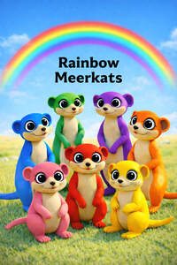

Trade Mark Journal No.2026/007 13 February 2026
UK00004326563 19 January 2026 (9,16,18,24,25,28,35,41,42)

- Class 9
- Photographic, cinematographic and optical apparatus and instruments; apparatus for use in the processing, recording, receiving, transmission, broadcasting, reproduction encoding and decoding of sound, video or images; magnetic data carriers; films; pre-recorded tapes, cassettes, discs and DVDs; computer and video game cassettes, cartridges, discs, CDs and DVDs; computer software programs; computer games software; electronic programmes and software, computer games consoles and hand held devices; amusement apparatus; vending machines; decorative magnets; spectacles and spectacle cases; sunglasses and sunglass cases; mouse pads and mouse mats; telephones and telephone accessories; ringtones; screensavers; electronic publications; digital music; digital music downloads, downloadable electronic publications, databases; computer software for searching and retrieval of data; electronic notice boards; magnetic and optical discs bearing sound or video recordings; video and sound recording carriers. AI (artificial intelligence) generated content, including Ai software, photos, films, books, magazines, animation. Computer-aided engineering [CAE] software. 3D animation software. Motion picture films featuring drama, action, comedy, adventure and/or animation; and motion picture films for broadcast on television featuring drama, action, comedy, adventure and/or animation; pre-recorded vinyl records, audio tapes, audio-video tapes, audio video cassettes, audio video discs, and digital versatile discs featuring drama, action, comedy, adventure, music and/or animation; stereo headphones; batteries; cordless telephones; hand-held calculators; audio cassette and CD players; CD ROM games; hand-held karaoke players, telephone and/or radio pagers; short motion picture film cassettes featuring drama, action, comedy, adventure and/or animation to be used with hand-held viewers or projectors; video cassette recorders and players, compact disc players, digital audio tape recorders and players, electronic diaries; radios; global positioning systems; navigation apparatus for vehicles (on-board computers); parts and fittings for all of the aforementioned goods. mouse pads eyeglasses, sunglasses and cases therefore; booklets sold with audio tapes as a unit; computer programs, namely, software linking digitised video and audio media to a global computer information network; game equipment sold as a unit for playing computer games; video and computer game programs; video game cartridges and cassettes; and decorative magnets; computer software supplied from the Internet; electronic publications (downloadable) provided from databases or the Internet; computer software and telecommunications apparatus (including modems) to enable connection to databases and the Internet; digital music (downloadable) provided from the Internet; digital music (downloadable) provided from MP3 Internet web sites; MP3 players. Pre-recorded television programmes; pre-recorded videos; compact discs; DVD's; computer games. Film production services.
- Class 16
- Paper, cardboard and goods made from these materials, not included in other classes; printed matter; printed publications; magazines; comic books; colouring books; children’s books; novels, newsletters; postcards; photographs; stationery; adhesives for stationery or household purposes; instructional and teaching material; memo pads; address books; children’s activity books; stationery, writing paper, envelopes diaries; playing cards; posters; Children’s story books. Children’s retail books, Educational books, entertainment books, book covers, colouring books, paints and crayons; colouring prints; carrier bags; tablecloths and napkins made of paper; paper lunch bags; calendars; greeting cards; wrapping paper and packaging materials, gift cards and gift tags; stickers; notebooks, loose-leaf binders; game books and activity books, kids magazines, pens and pencils; modelling compounds; stickers; personal organizers; pencil top ornaments; erasers, pencil cases; rulers; albums; labels; book marks; picture holders; Christmas crackers; paper party goods and paper decorations; including napkins, doilies, place mats, hats, cake decorations, paper party streamers, printed transfers for embroidery or fabric appliques; printed patterns for costumes, pyjamas, sweatshirts and t-shirts not mentioned in other classes; paper photo frames. ; removable tattoos; printed patterns for sewing or knitting; toilet paper; kitchen roll and tissues, markers, coloured pencils, painting sets, crepe paper, paper towels. Artists' materials (other than colours or varnish); paint brushes; instructional and teaching material (other than apparatus); writing instruments, pencil sharpeners; pencil boxes and cases; pencil holders; photograph albums; ring binders; folders; notebooks; notepads; diaries; calendars; greetings cards; drawings (graphic); stickers; transfers (decalcomanias); stencils; ordinary playing cards; printed computer programmes for children.
- Class 18
- Articles of leather or imitation leather; suitcases; travelling bags; shopping bags, brief cases; schoolbags; rucksacks, back packs, children's rainbow meerkat back packs; sports bags, duffel bags, gym bags, tote bags; school bags, hand bags satchels; wallets; purses; coin purses; umbrellas; umbrella covers; parasols, leather key rings; key-holders; book case covers; mobile phone holders and covers; mobile electronic devices and covers, pocket books; luggage label holders. Belts.
- Class 24
- Textile articles; bed linen, duvet covers, pillow cases, bed sheets, fabric quilt covers for baby cots and beds, bed blankets; throws; lamp shades; table linen; table cloths; napkins; handkerchiefs, curtains; bean bag covers; flags; towels; tea towels; flannels; textile badges; hot water bottle covers; nightdress cases; sleeping bag cover; shower curtains; textile wall hangings. Baby blankets, Baby buntings, Diaper changing cloths for babies.
- Class 25
- Baby doll pyjamas, Baby bodysuits, Baby layettes for clothing, Baby & toddler pants, Underpants for babies and young children, Clothing for babies & toddlers, Baby & toddler clothes, Knitted baby shoes, Plastic baby bibs, One-piece clothing for infants, toddlers, children (onesies & rompers), Baby bibs [not of paper], Infant clothing, Clothing for children, Bootees (woollen baby shoes), Nappy pants [clothing], animal print dresses & outfits for infants, toddlers, and children. Bodysuits, Playsuits [clothing], Embroidered clothing, pyjamas for kids (displaying rainbow meerkats), sleepwear for kids/children. Clothing/fabric, nightwear, robes, onesie, headgear, displaying rainbow meerkat characters, clothing all with rainbow meerkat characters displayed, quilt cover for cots/beds with same.
- Class 28
- Costumes being childrens playthings, Infant toys, childrens toys, Toys for babies, Crib toys Christmas dolls, Rainbow meerkat dolls & stuffed animals, toys, Baby playthings, Infant development toys, Doll clothing, Toys for infants & children, Fabric toys, Crib mobiles [toys], Multiple activity toys for babies & children, Clothing for dolls, Tricycles for infants [toys], Play mats incorporating infant toys [playthings], Toy pushchairs, Play mats containing infant toys, Clothing for teddy bears Toy hats, Playhouses for children, Cuddly rainbow meerkat toys, Toy prams Games and playthings not included in other classes; balls; action figures; coin or token operated electrical or electronic amusement apparatus; hand-held units for playing electronic games, arcade games, bath toys; board games; toy vehicles; children's fancy dress costumes; flying discs; playing cards and card games; teddy bears; jigsaw puzzles; cube puzzles; manipulative puzzles; balloons; masks, paper hats; skateboards; water squirting toys; surfboards; swim boards for recreational use; Christmas decorations; party hats; bathtub toys; ride-on toys; kites, paper face masks; skateboards. balls, namely, playground balls, soccer balls, baseballs, basketballs; baseball gloves; swim fins; water toys (other than swimming aids); Playhouses and tents; puzzles; toy ride on vehicles; toy projectors; toy sewing sets; yo-yos; die cast vehicles; theme park rides; parts and fittings for the aforesaid; games and playthings; all included in Class 28.
- Class 35
- Advertising, marketing, promotions, of the rainbow meerkats brand, toys, games, doll figures, action figures, plush toys, stuffed toys, & games, soft cuddly toy characters, animal toys for children, children's toys, rainbow meerkat character animal toys in red, yellow, purple, green, orange, pink, blue.
- Class 41
- Entertainment and education services; provision of information relating to education, entertainment, cultural and sporting activities; TV and radio entertainment services; television and radio transmission by terrestrial, satellite and cable broadcasting whether free, or for payment by subscription or per programme; production, presentation, distribution, and rental of television and radio programmes and of films and sound and video recordings for children; organisation, production and presentation of events for children for educational and entertainment purposes; competitions, contests, games, fun days, exhibitions, shows, roadshows, staged events, theatrical performances, concerts, live performances and audience participation events; provision of entertainment and education for children via communication and computer networks; provision of games and competitions for children via communication and computer networks; provision of information relating to any of the aforesaid services. Provision of an on-line directory service featuring information relating to education, entertainment, cultural and sporting activities; entertainment services, namely, providing multimedia content or information over telecommunication networks, the Internet and other communications network; entertainment services featuring electronic media, multimedia content, videos, movies, pictures, images, text, photos, games, user-generated content, audio content, and related information via telecommunication networks, computer and communications networks; gaming services; gaming services for entertainment purposes; amusement arcade gaming machine rental services; electronic game services provided by means of the Internet or a telecommunication system; internet games; organisation of events for cultural, entertainment and sporting purposes; organisation of competitions and quizzes; publication of printed matter, periodical publications, printed publications, books and magazines; production and distribution of television programs, radio programs and motion picture films; production of pre-recorded video tapes, cassettes, discs and DVDs; production of pre-recorded audio tapes, cassettes and discs; syndication of media broadcasts; providing online information services in the field of education and entertainment; advisory and consultancy services relating to the aforementioned services. Theme park services.
- Class 42
- Scientific and technological services and research and design relating thereto; industrial analysis and research services; design and development of computer hardware and software; computer programming; installation, maintenance and repair of computer software; computer consultancy services; design, drawing and commissioned writing for the compilation of web sites; creating, maintaining and hosting the web sites of others; design services.
Thomas Wilson
Lucy Summer Rose